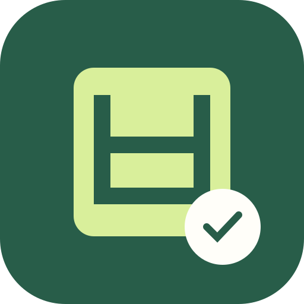
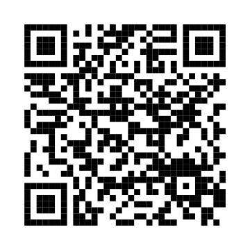

보고또보고
ANDROID APP현장 기록을,
내 휴대폰 앱으로.
갤럭시에 직접 설치하는 보고또보고.
사진과 음성 메모로 외근 보고서를 작성하세요.
Android 설치 파일 받기 ↓
PC에서 보고 있다면 휴대폰 카메라로 찍으세요.
- 위 버튼을 눌러 APK 파일을 내려받으세요.
- 다운로드한 APK를 열어 설치하세요.
- 설치된 ‘보고또보고’ 아이콘으로 실행하세요.
현재 미리보기 버전입니다. Android에서 다운로드 출처의 앱 설치 허용을 요청할 수 있습니다. 사내 Qwen은 앱 설정에서 주소를 입력하고 사내 Wi-Fi 또는 VPN에 연결해 사용하세요. 기록은 휴대폰 내부에 보관됩니다.